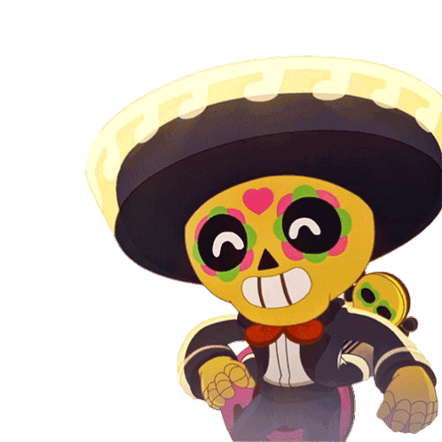

-
SPIKE #001

- DESTRUIDOR
- MEDIO ALCANCE
O Spike é um Brawler do tipo “Tiro preciso” e é de raridade Lendária. Ele tem com pouca vida e especializado em lidar com inimigos agrupados.
-
POCO #002
- SUPORTE
O Poco é um brawler do Tipo “Suporte” e de raridade Rara que é notável pela propagação extremamente ampla do seu ataque
-
EL PRIMO #003

- INTANKAVEL
O El Primo é um brawler do Tipo Tanque e de raridade Rara. Ele ataca com socos, causando dano considerável aos inimigos que ele é capaz de chegar perto o suficiente. Ele também tem muita vida, permitindo que ele suporte muitos danos.
-
CHESTER #004

- DESTRUIDOR
- ALEATORIDADE
O Chester é um personagem do tipo Destruidor e de raridade Lendária. A sua aparência é de um palhaço com vestes de bobo da corte, ao que tudo indica faz parte de algum show do Starr Park. Ele carrega uma caixa surpresa, que tem um palhaço que é lançado para fora.